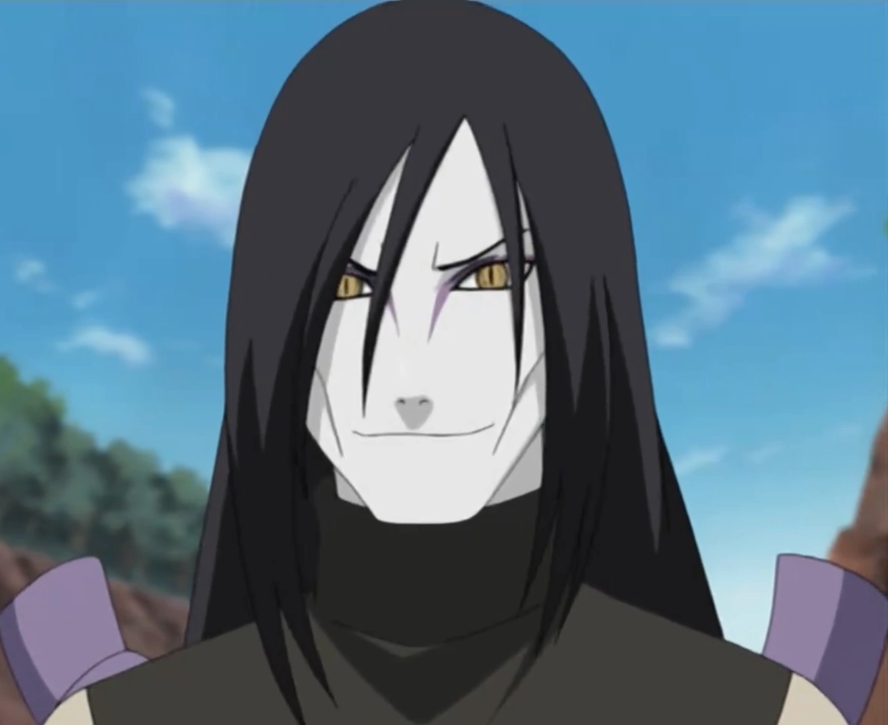

Overview
Orochimaru is a major antagonist from the Japanese manga and anime series Naruto, created by Masashi Kishimoto. He is a former ninja of the Hidden Leaf Village (Konohagakure) and one of the Legendary Sannin, alongside Jiraiya and Tsunade.
Early Life
Orochimaru was once a talented student of the Third Hokage, Hiruzen Sarutobi. After losing his parents at a young age, he became obsessed with understanding life, death, and forbidden jutsu. His thirst for knowledge eventually led him down a dark path.
Personality
Orochimaru is known for being:
He values knowledge and power above all else, viewing people merely as tools for his experiments.
Legendary Sannin
Alongside Jiraiya and Tsunade, Orochimaru earned the title of Legendary Sannin after surviving a deadly battle during the Second Great Ninja War. Despite their shared past, Orochimaru later betrayed the village and became a rogue ninja.
Ninja Journey
After fleeing Konohagakure, Orochimaru joined the criminal organization Akatsuki but later left after clashing with Itachi Uchiha. He went on to create his own hidden village, Otogakure, where he conducted countless experiments in pursuit of immortality.
Powers and Abilities
Orochimaru possesses terrifying abilities, including:
His experiments allowed him to modify his body, granting unnatural regeneration and snake-like traits.
Connection with Sasuke
Orochimaru becomes deeply interested in Sasuke Uchiha due to his Sharingan. He manipulates Sasuke by offering him power, placing a Curse Mark on him with the intention of eventually taking over his body.
Later Redemption
After the Fourth Great Ninja War, Orochimaru assists Sasuke and the Allied Shinobi Forces. Though still dangerous, he adopts a more restrained approach to his experiments and remains under strict surveillance by the Hidden Leaf Village.
In Boruto
In Boruto: Naruto Next Generations, Orochimaru creates an artificial human named Mitsuki, whom he considers his son. He sends Mitsuki to Konohagakure so that he may find his own path in life.
Legacy
Orochimaru represents:
Feared and respected, Orochimaru remains one of the most complex and memorable characters in the Naruto series.